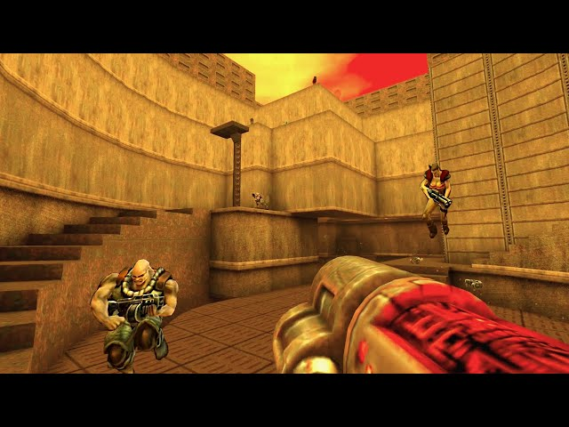
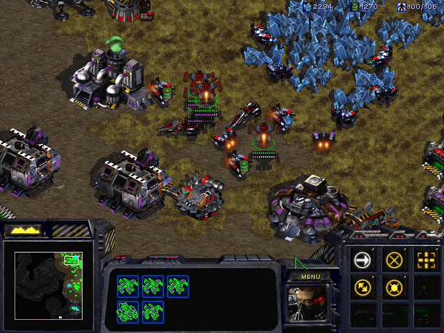
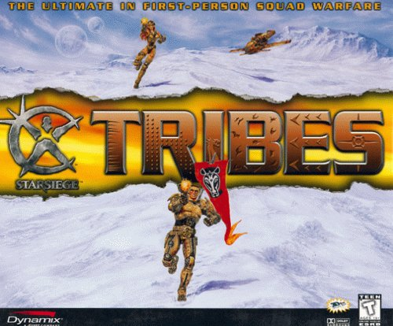
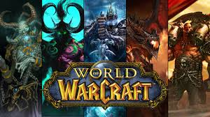
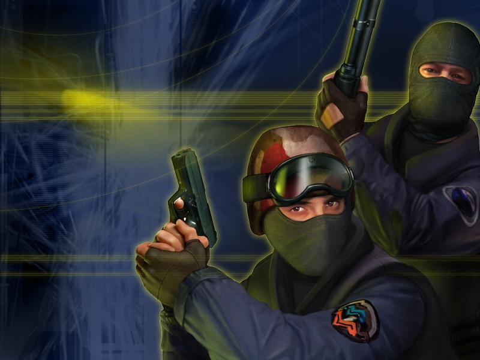
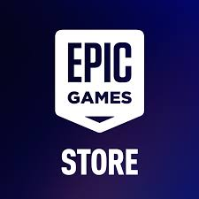
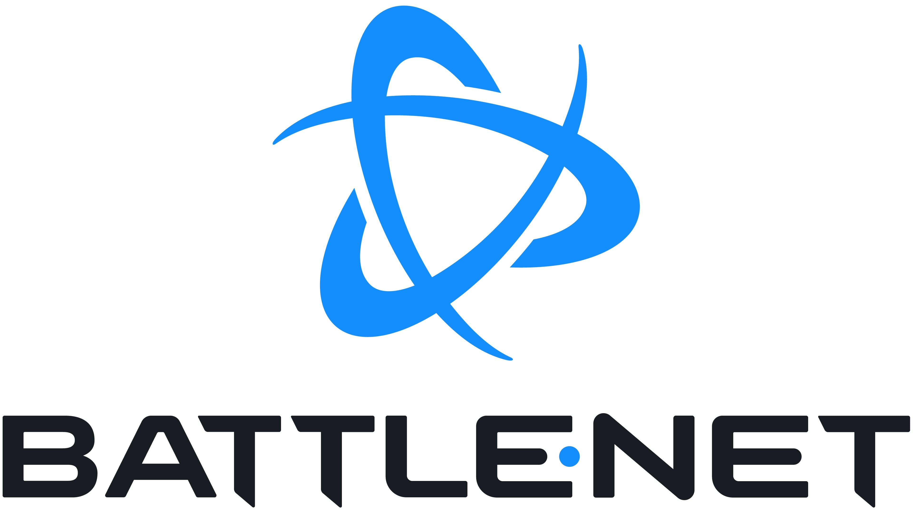

LAN Gaming
PCs popularized LAN (Local Area Network) multiplayer, where players connected computers within the same physical space using Ethernet cables, hubs, switches, or routers. This setup allowed multiple users to communicate directly over a local network without relying on the internet, resulting in extremely fast and stable connections.
LAN gaming became especially popular in the 1990s and early 2000s with titles like Doom, Quake, and StarCraft. These games supported fast, low-latency gameplay and helped define competitive multiplayer experiences, ranging from first-person shooters to real-time strategy games.

Doom (1993) — One of the first LAN multiplayer shooters

Quake (1996) — Popularized competitive deathmatch gameplay

StarCraft (1998) — Defined LAN-based strategy competition
LAN parties—events where players brought their computers together—became a major part of early gaming culture. These gatherings often required players to physically transport desktop computers, monitors, and networking equipment, creating a highly social and collaborative environment.
In addition to competition, LAN gaming fostered strong community connections. Players could easily communicate face-to-face, troubleshoot technical issues together, and organize tournaments on the spot. This environment helped lay the foundation for modern esports and organized competitive gaming.
While online multiplayer has largely replaced LAN gaming in everyday use, LAN environments are still valued today for their reliability, minimal latency, and independence from internet connectivity. They are often used in tournaments, local events, and controlled competitive settings where performance consistency is critical.
Online Servers
As internet access became more widespread in the late 1990s and early 2000s, PC gaming began to shift from local area networks (LAN) to online servers. Instead of connecting only to nearby machines, players could now join centralized servers hosted by developers or community members, allowing them to compete and cooperate with others across the world.
Early online multiplayer games such as Starsiege: Tribes demonstrated the potential for large-scale online matches, supporting dozens of players in a single game. This marked a significant evolution from smaller LAN-based sessions and introduced the concept of persistent online communities.
Online servers enabled a wide variety of gameplay experiences, including competitive matches, cooperative missions, and large persistent worlds. Games like Counter-Strike popularized server browsers and community-hosted matches, giving players control over where and how they played. Meanwhile, massively multiplayer online games (MMOs) such as World of Warcraft allowed thousands of players to interact simultaneously in shared virtual environments, creating complex social and economic systems within the game world.
This transition significantly expanded the scale and accessibility of multiplayer gaming. However, it also introduced new challenges, including reliance on internet speed, latency, server stability, and security. Despite these challenges, online servers became the foundation for modern multiplayer gaming, influencing everything from matchmaking systems to global esports competitions.



Digital Platforms
Digital platforms have fundamentally transformed how PC games are distributed, purchased, and played. Instead of relying on physical media such as discs, players can now download games instantly from online storefronts and manage entire libraries from a single application. This shift has made gaming more accessible while also reducing production and distribution costs for developers.
One of the most influential platforms is Steam, launched by Valve in 2003. Steam introduced key features such as automatic updates, cloud saves, achievements, digital storefronts, and integrated social systems. These innovations streamlined the gaming experience and set a new standard for how games are delivered and maintained.
Other major platforms, including the Epic Games Store and Blizzard’s Battle.net, expanded on this model by offering exclusive titles, free game promotions, and integrated multiplayer services. These platforms also support matchmaking, friend systems, voice chat, and community hubs, allowing players to easily connect and interact with others.
Digital platforms also play a critical role in modern multiplayer gaming by supporting live-service models. Games can receive continuous updates, seasonal content, and real-time events, keeping players engaged over long periods of time. Titles like Fortnite demonstrate how digital platforms enable developers to maintain persistent online worlds and large player communities.
Overall, digital distribution has made gaming more convenient, connected, and dynamic, helping shape the modern multiplayer ecosystem while giving players instant access to global gaming communities.

